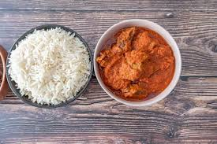

Rice and Stew Recipe

Ingredients
- 2 cups of rice
- 1 can of tomato paste
- 1 onion, chopped
- 2-3 cups water/chicken broth
- 2 teaspoons thyme
- Salt and pepper to taste
- Cooking oil
Method of Preparation
- Rinse the rice and cook it in water or chicken broth until tender (about 20 minutes).
- In a separate pot, heat oil and sauté the chopped onions.
- Add tomato paste, thyme, salt, and pepper; cook for about 10 minutes until thick.
- Combine cooked rice with the stew and let it simmer for 5 minutes.
- Serve hot, and enjoy with your choice of protein!